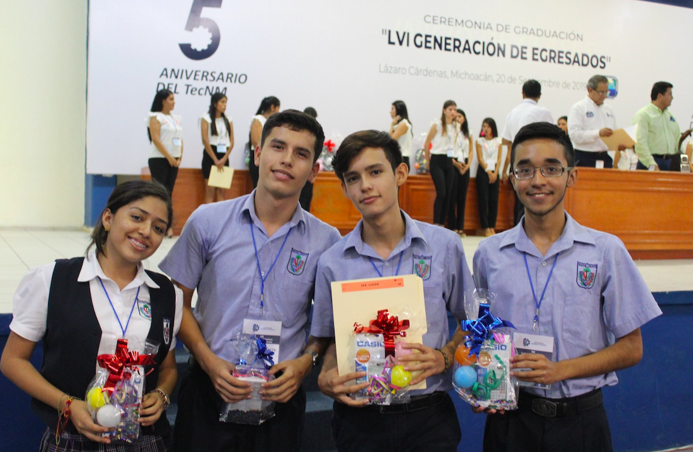

EVENTO REGIONAL DE MATEMÁTICAS
He participado en muchos concursos de matemáticas y sinceramente he dedecir que este evento regional de matemáticas organizado por el ITLAC, es hasta ahora uno de los más divertidos en los que he participado. Conciste en un rally matemático en equipo, un examen en equipo y uno individual. El rally es lo más divertido de todo, corres por todo el ITLAC, incluso hay brincolines, las actividades se hacen con tiempo y en los rallys suelen ser acertijos o problemas matemñaticos sencillos.